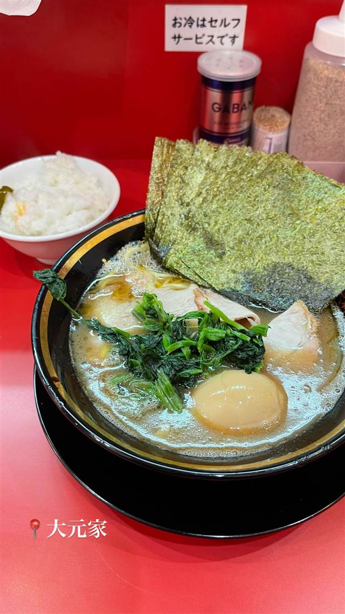
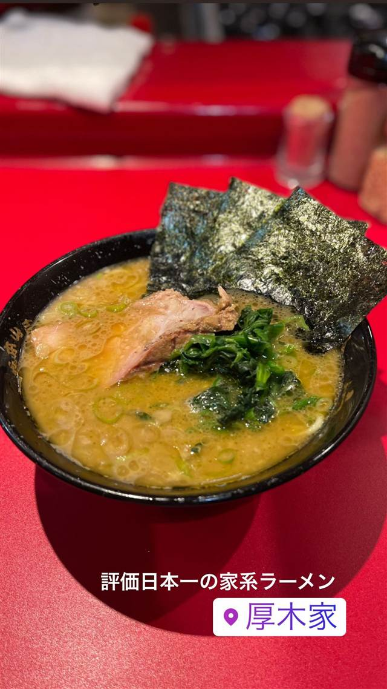
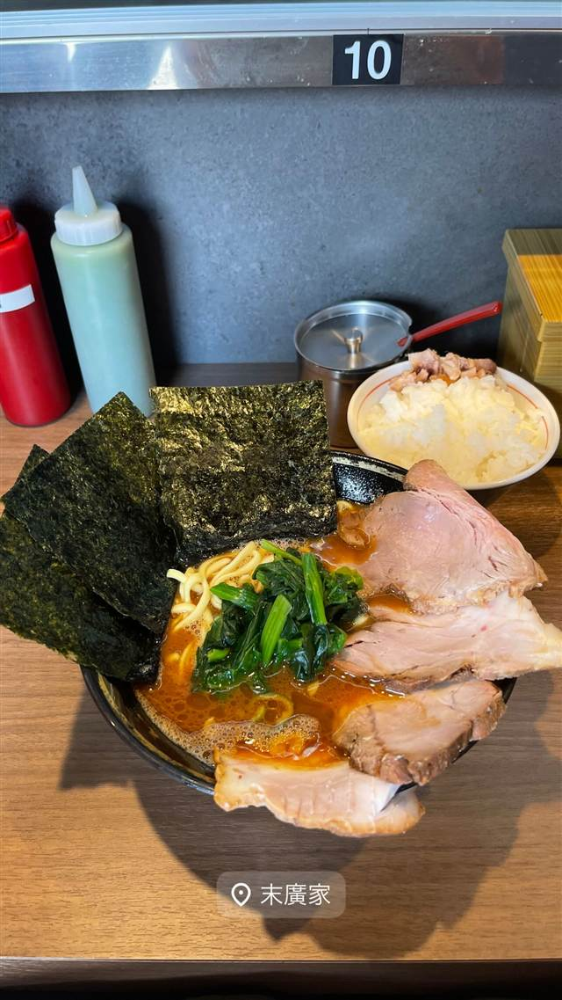
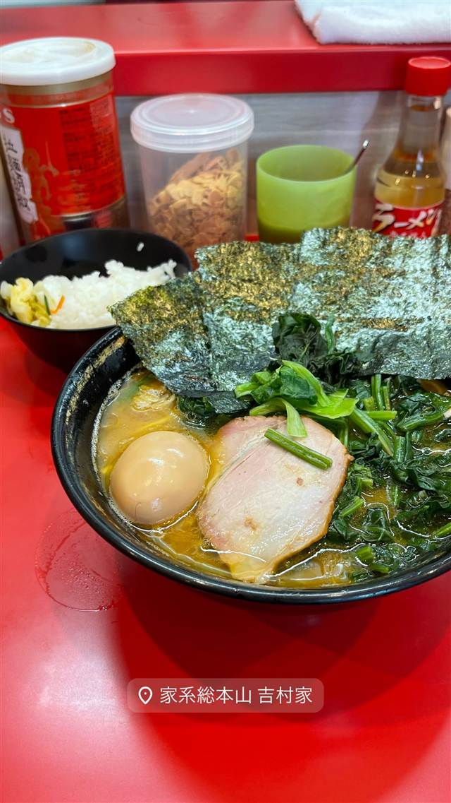
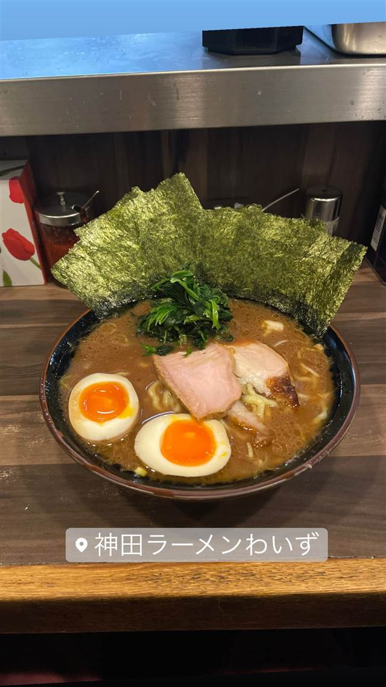
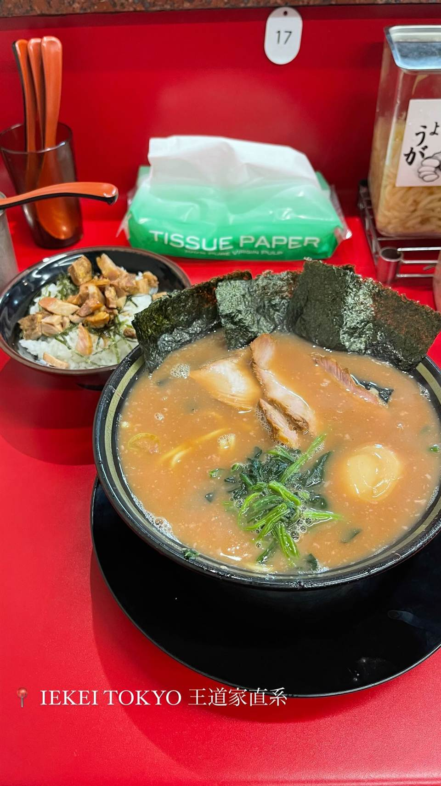

大輝家直系横浜家系ラーメン 大元家
横浜家系の直系店で楽しむライス食べ放題の家系ラーメン
大元家
「大元家」は、横浜家系ラーメン「大輝家」の直系（暖簾分け）店として2024年5月に大田区北千束にオープン。大輝家グループ譲りの濃厚な豚骨醤油スープに酒井製麺の中太麺を合わせ、ライス食べ放題や卓上の薬味で自分好みにカスタマイズできるのが魅力。
TRIVIA
豆知識
- 暖簾分け元の「大輝家」自体、2022年に「志田家」から独立して生まれた比較的新しい家系グループ。
REVIEWS
世間の評判
90.4ラーメンDB
燻製チャーシューの評判と品質のムラ
- 燻製チャーシューの固すぎないしっとりとした食感を評価する声が多い
- 味にブレがあったり岩のりが欠品したりすることがあるという指摘がある
- セルフの食べ放題ライスがいつもパサパサだという声もある
- 客が券売機前にたむろしてドアが開けっぱなしになり店内が暑いという指摘もある
ラーメンデータベース 口コミ37件・最新 2026-08
| 創業 | 2024年5月19日オープン |
|---|---|
| 系譜 | 横浜家系ラーメン「大輝家」の直系店（暖簾分け）。大輝家自体は2022年6月に「志田家 蒲田店」から独立して生まれたグループ。 |
| 看板 | 特製ラーメン（豚骨醤油の家系ラーメン） |
| こだわり | 店内で炊き出す濃厚な動物系スープに醤油ダレを合わせ、酒井製麺の中太麺を使用。ライス食べ放題で、卓上にショウガ・ニンニク・酢などの薬味を揃える。 |
| どこから | 23区の外れ・近郊 |
| 予算 | 昼 ¥1,000～¥1,999 夜 ¥1,000～¥1,999 |
| 場所 | 北千束駅／大岡山駅 東京都大田区北千束1-42-2 |
| メモ | 営業時間は11:00〜15:00／17:00〜23:00（L.O.22:50）。ライス無料お替わり自由。 |
食べたもの：家系ラーメン
NEARBY
近い店・同じ系統の店
-

★ 家系 本厚木駅 厚木家 家系総本山「吉村家」創業者の実子が営む直系の一杯 昼 ～¥999 夜 ～¥999 -

★ 家系 白楽駅 ラーメン 末廣家 吉村家直系、吊るし焼きチャーシューが看板の家系 夜 ～¥999 -
 ★
家系 蒲田
らーめん飛粋（HIIKI）
国産豚骨と鶏ガラを別炊きにしたマイルドな家系ラーメン
昼 ¥1,000～¥1,999 夜 ¥1,000～¥1,999
★
家系 蒲田
らーめん飛粋（HIIKI）
国産豚骨と鶏ガラを別炊きにしたマイルドな家系ラーメン
昼 ¥1,000～¥1,999 夜 ¥1,000～¥1,999
-

★ 家系 横浜駅 家系総本山 吉村家 家系ラーメン全体の元祖・総本山で全国の家系はここから広がった 昼 ¥1,000～¥1,999 夜 ¥1,000～¥1,999 -

★ 家系 神田 神田ラーメン わいず（神田本店） 修行先譲りの濃厚豚骨醤油スープと三河屋製麺の多加水太麺 昼 ¥1,000～¥1,999 夜 ¥1,000～¥1,999 -

★ 家系 末広町駅 王道家直系 IEKEI TOKYO 家系四天王「王道家」の直系、東京店だけの自家製麺 昼 ～¥999 夜 ～¥999